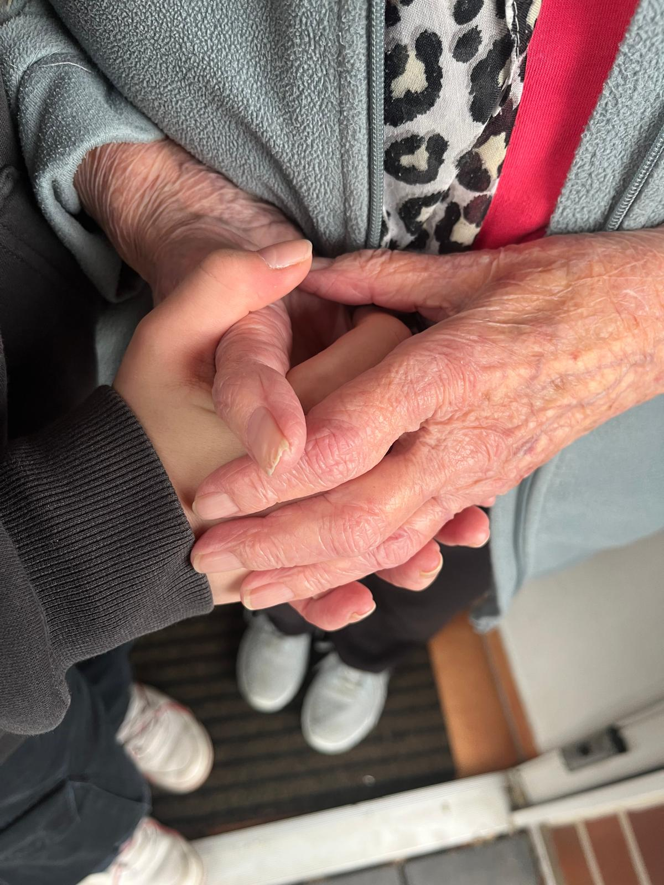
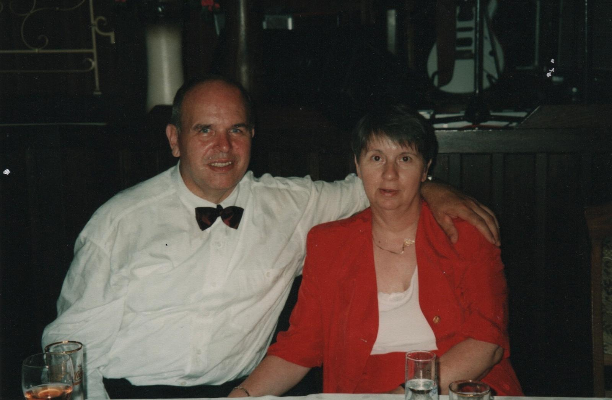
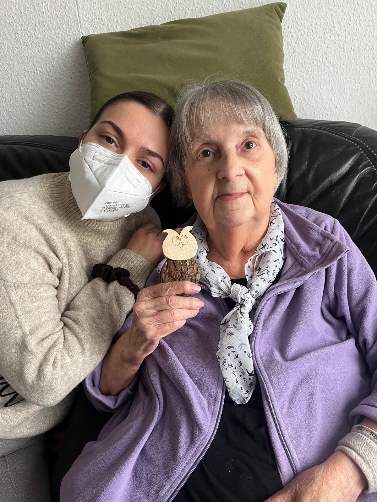
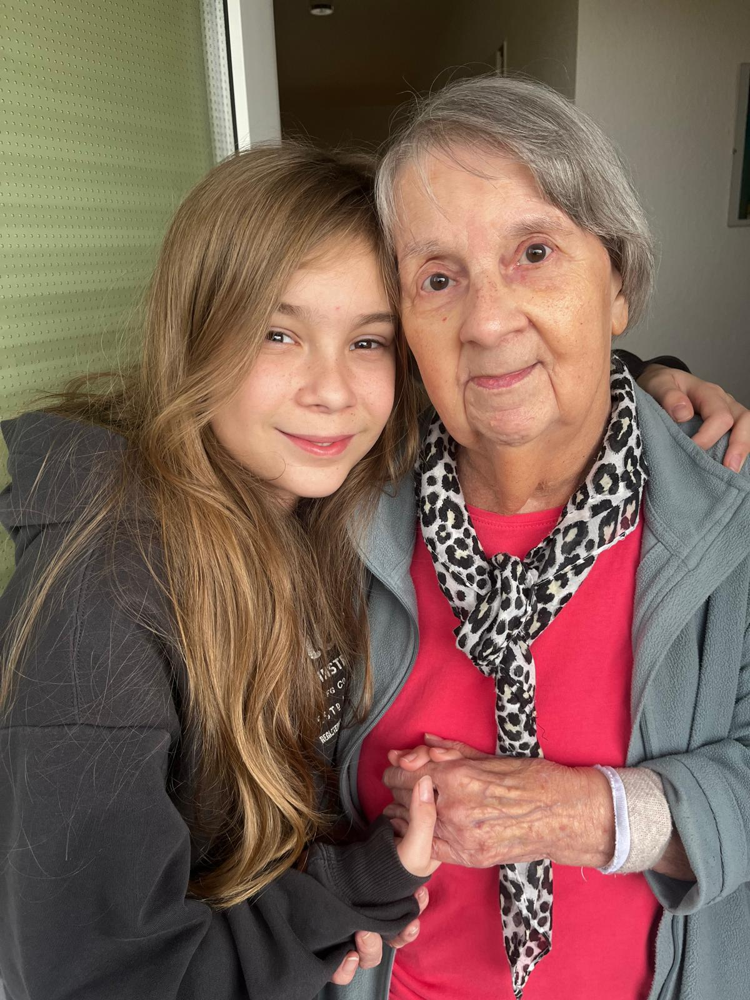

Ein Herz für die Ewigkeit

Im Krankenhaus

Käte Kocker mit ihrem Ehemann Jürgen Kocker
Lecker

Ein Treffen mit Enkel Elias

Ein toller Moment mit Tochter Anja

Ein Geschenk von Enkel Milena

Ein besonderer Moment in bewegten Bildern